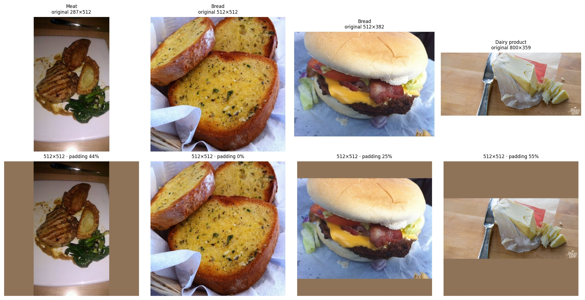
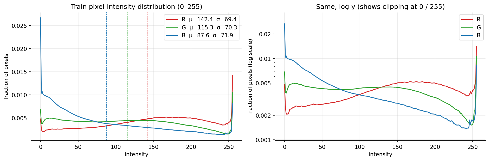
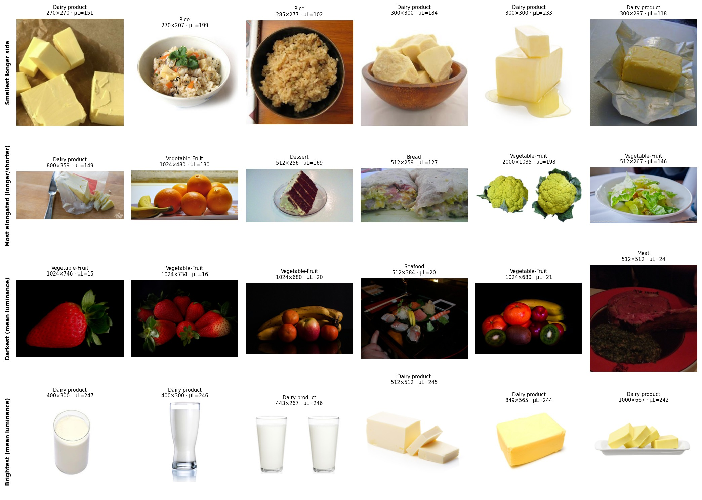
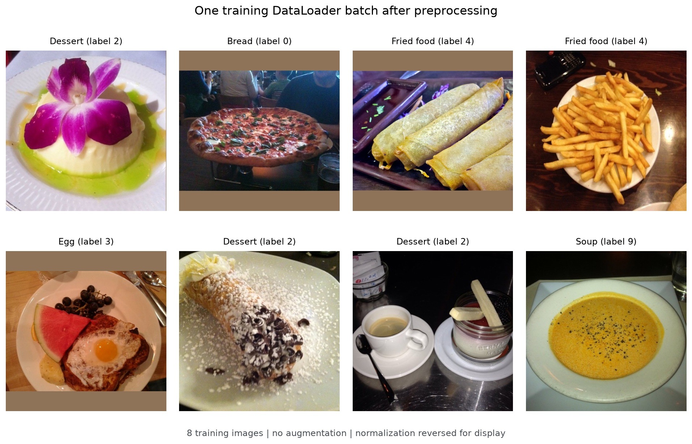

Assignment 2
Deep Learning on Large-Scale Data and Specialized Tasks
Deep Learning on Large-Scale Data for Specialized Computer Vision or Language Tasks
Instructor
Lê Thành Sách
Group members
Hoàng Xuân Bách · Nguyễn Việt Hùng · Lê Nguyễn Gia Phúc
Problem statement
Food-11 recognition is a supervised image-classification task: given one food photograph, predict its single supplied category. The study asks whether ImageNet-pretrained visual features and backbone fine-tuning improve recognition over a compact network trained from scratch, and how those choices affect class-wise errors and computational cost. Macro-F1 is the primary metric because it gives equal weight to all 11 categories.
The task is defined by the following elements:
- Prediction unit: One RGB food photograph assigned to one broad category; there are no bounding boxes, segmentation masks, or ingredient-level labels.
-
Input: A float32 tensor
x ∈ ℝ3×256×256. The notebook resizes the longer image side to 256 pixels with bilinear interpolation, centers the image on a black square canvas, and applies ImageNet RGB normalization. -
Output: Eleven logits
zθ(x) ∈ ℝ11, one for each Food-11 category (Bread, Dairy product, Dessert, Egg, Fried food, Meat, Noodles-Pasta, Rice, Seafood, Soup, and Vegetable-Fruit). The predicted label is the highest-scoring class after softmax; these scores are not assumed to be calibrated probabilities. - Objective and primary metric: Training minimizes unweighted multiclass cross-entropy in FP32. Held-out performance is assessed primarily with test Macro-F1, alongside accuracy, per-class metrics, confusion matrices, and runtime measures.
- Main difficulties: Food appearance varies with preparation, viewpoint, lighting, scale, and background; some categories have overlapping visual cues, composite dishes have one broad label, and the source training counts are imbalanced (up to a 5.36:1 ratio).
The frozen-versus-full ResNet-18 comparison holds the architecture and ImageNet initialization fixed while changing whether the backbone is updated. Comparisons with SimpleCNN also change architecture and initialization, so they describe overall model differences rather than isolating a causal effect of pretraining alone.
Dataset description and EDA
Dataset description
Source, task and license
Original source and version. Food-11 was released by the Multimedia Signal Processing Group (MMSPG) at EPFL and introduced by Singla, Yuan and Ebrahimi (2016) in Food/Non-Food Image Classification and Food Categorization Using Pre-Trained GoogLeNet Model. This project uses the Kaggle mirror maintained by trolukovich; the EDA notebook pins its automatic download to version 1. EPFL is the original dataset source.
Collection and category design. Section 4.2 of the original paper describes categories adapted from major USDA food groups. Images were mainly collected from Food-101, UEC-FOOD-100 and UEC-FOOD-256, with additional Flickr and Instagram images for Dairy product and Vegetable-Fruit. The authors included varied food items within each category and selected images whose main content belonged to that category.
Task and annotations. The task is supervised, single-label classification: given one RGB food photograph, predict one of 11 broad food categories. The prediction unit is one image. In the Kaggle distribution used here, labels come from class folders and are mapped to integer IDs 0–10 as listed in Table 2. A mixed dish still receives one supplied category label. The group preserves the supplied class labels and official split assignments for retained images, but applies MD5 and pHash duplicate screening and two documented manual exclusions before evaluation. The resulting splits contain 9,846 training, 3,364 validation, and 2,770 test images.
License and use. The EPFL conditions of use permit use, copying, modification and distribution of the dataset and its documentation for research purposes only and prohibit commercial distribution. This project uses Food-11 for academic coursework and research under those published conditions.
Format, counts and size
| Property | Value |
|---|---|
| Dataset version | Version 1 of the Kaggle distribution; original Food-11 release by EPFL |
| Total samples | 16,643 (train 9,866; validation 3,430; evaluation/test 3,347) |
| Classes | 11 food categories; one integer label per image |
| Raw format | JPEG, RGB, uint8 in [0, 255] |
| Model input | float32 tensor, 3 × 512 × 512 after resize, padding and normalization |
| Size on disk | ≈ 1,133 MiB (median 48 KiB; largest 9.6 MiB; 1 KiB = 1,024 bytes) |
| License | EPFL MMSPG: use for research purposes only |
Table 1 - Food-11 overview
Table 2 gives class counts by split; Figure 1 compares total counts by class. Dessert and Soup are the largest classes; Rice is the smallest. The largest-to-smallest ratio is 5.36 in train and 5.30 overall, so accuracy should be read alongside macro-F1 and per-class recall.
| Label | Class | Train | Val | Test | Total | Share |
|---|---|---|---|---|---|---|
| 0 | Bread | 994 | 362 | 368 | 1,724 | 10.4% |
| 1 | Dairy product | 429 | 144 | 148 | 721 | 4.3% |
| 2 | Dessert | 1,500 | 500 | 500 | 2,500 | 15.0% |
| 3 | Egg | 986 | 327 | 335 | 1,648 | 9.9% |
| 4 | Fried food | 848 | 326 | 287 | 1,461 | 8.8% |
| 5 | Meat | 1,325 | 449 | 432 | 2,206 | 13.3% |
| 6 | Noodles-Pasta | 440 | 147 | 147 | 734 | 4.4% |
| 7 | Rice | 280 | 96 | 96 | 472 | 2.8% |
| 8 | Seafood | 855 | 347 | 303 | 1,505 | 9.0% |
| 9 | Soup | 1,500 | 500 | 500 | 2,500 | 15.0% |
| 10 | Vegetable-Fruit | 709 | 232 | 231 | 1,172 | 7.0% |
| All classes | 9,866 | 3,430 | 3,347 | 16,643 | 100.0% |
Table 2 - Official sample counts by class and split
Bias and limitations
- Classes are imbalanced, with fewer examples for Rice, Dairy product and Noodles-Pasta.
- Each image has one label; representative sample inspection includes composite plates and images that appear off-topic.
- Photographic style differs by class and repeated images occur across the official splits; both can affect evaluation.
Exploratory data analysis (EDA)
The EDA scans all files in the official release. File integrity and original image dimensions are audited before preprocessing. Pixel statistics are computed after longer-side resize to 512 px, with padding excluded; normalization statistics are fitted on the training split only.
Data integrity and splitting
All 16,643 files decode as RGB JPEGs; no file is empty, unreadable or inconsistent with its extension. The same 11 class folders appear in all three official splits. Of 1,887 files with a non-default EXIF orientation tag, 1,884 have the invalid value 0 and only three have a real 90° rotation; images are read as stored.
The official 59.3% / 20.6% / 20.1% training/validation/evaluation (test) split is retained. All 16,643 images are used; the group does not create a custom split or select a subset. The split unit is an individual image. No project-level random seed or stratification applies because the group does not resplit the data; the EPFL download page lists the three partitions but does not state the original split seed or whether the split was stratified.
Exact copies across the published splits mean image-level splitting does not eliminate leakage. Class proportions are similar across splits (χ² test p = 0.806; Cramér's V = 0.021).
Class distribution

An always-Dessert predictor reaches 0.146 accuracy but only 0.023 macro-F1 on validation. This is why macro-F1 and per-class recall should be read alongside accuracy.
Input size and aspect ratio
There are 825 distinct image shapes; the longer side ranges from 270 to 9,542 px, with a median of 512 px. Table 3 summarizes resizing and padding by split. The aspect-ratio groups in Table 4 show why padding is concentrated in non-square images. Figure 2 illustrates the transformation.
| Split | Upsampled (%) | Longer side = 512 (%) | Downsampled (%) | Needs padding (%) | Mean padding (%) | Max padding (%) |
|---|---|---|---|---|---|---|
| train | 2.4 | 92.1 | 5.5 | 43.6 | 11.7 | 55.1 |
| val | 1.6 | 93.2 | 5.2 | 38.0 | 10.3 | 61.7 |
| test | 2.0 | 91.7 | 6.3 | 40.5 | 10.9 | 47.5 |
| all | 2.1 | 92.2 | 5.6 | 41.8 | 11.3 | 61.7 |
Table 3 - Resize and padding statistics by split (percentages rounded independently)
| Aspect-ratio group (longer / shorter) | Images | Share (%) | Mean padding (%) |
|---|---|---|---|
| 1:1 | 9,683 | 58.2 | 0.0 |
| 1.00–1.32 | 536 | 3.2 | 8.3 |
| ≈4:3 (1.32–1.34) | 3,759 | 22.6 | 25.0 |
| 1.34–1.45 | 959 | 5.8 | 25.8 |
| ≈3:2 (1.45–1.55) | 845 | 5.1 | 33.4 |
| 1.55–1.85 (5:3, 16:9) | 841 | 5.0 | 41.7 |
| >1.85 | 20 | 0.1 | 49.6 |
Table 4 - Aspect ratio and resulting padding

Duplicates and split leakage
Exact duplicates have identical file bytes; matching 64-bit dHashes mark possible near-duplicates that need visual review. Table 5 summarizes pairwise overlap; Table 5b breaks exact-copy overlap down by test class. The official split is retained; report results on the full test set and on the 2,787 images without a byte-identical train/validation copy.
| Split pair | Byte-identical files (MD5) | Shared dHashes |
|---|---|---|
| train–val | 51 | 58 |
| train–test | 249 | 254 |
| val–test | 311 | 314 |
Table 5 - Pairwise duplicate audit (dHash counts include byte-identical pairs)
| Class | Test images | Exact copy in train/validation | Rate (%) | Test images without exact train/validation copy |
|---|---|---|---|---|
| Bread | 368 | 100 | 27.2 | 268 |
| Dairy product | 148 | 0 | 0.0 | 148 |
| Dessert | 500 | 60 | 12.0 | 440 |
| Egg | 335 | 5 | 1.5 | 330 |
| Fried food | 287 | 66 | 23.0 | 221 |
| Meat | 432 | 109 | 25.2 | 323 |
| Noodles-Pasta | 147 | 0 | 0.0 | 147 |
| Rice | 96 | 0 | 0.0 | 96 |
| Seafood | 303 | 100 | 33.0 | 203 |
| Soup | 500 | 116 | 23.2 | 384 |
| Vegetable-Fruit | 231 | 4 | 1.7 | 227 |
| All | 3,347 | 560 | 16.7 | 2,787 |
Table 5b - Test images with a byte-identical copy in train or validation, by class
Of 568 test images sharing a dHash with train or validation, 560 are byte-identical and eight are dHash-only candidates: six in Rice and two in Vegetable-Fruit. dHash matches are possible near-duplicates, not confirmed duplicates.

Seafood has the highest exact-copy rate (33.0%). Dessert also has 60 affected test images (12.0%). Dairy product, Noodles-Pasta and Rice have no byte-identical test copies in train or validation.
Additional byte-identical copies within the same split are 5 in train, 3 in validation and 4 in test; these copies are retained. In addition, 51 validation images are byte-identical to images in train, so validation-based checkpoint selection and early stopping could be optimistic for those examples. This is a limitation of the provided split.
Input size versus class
Table 6 shows that longer side, file size and bits per pixel carry the strongest class signal. The effect-size labels use rule-of-thumb thresholds: ε² < 0.01 negligible, < 0.06 small, < 0.14 moderate and ≥ 0.14 large. The metadata-only random forest reaches 0.251 accuracy and 0.193 macro-F1 on validation, above the majority-class baseline (0.146 and 0.023). Vegetable-Fruit is the clearest size outlier, so its results should be interpreted with care.
| Size feature | All 11 classes | Without Vegetable-Fruit |
|---|---|---|
| Longer side | 0.184 (large) | 0.046 (small) |
| Shorter side | 0.045 (small) | 0.013 (small) |
| Aspect ratio | 0.046 (small) | 0.014 (small) |
| File size | 0.166 (large) | 0.087 (moderate) |
| Bits per pixel | 0.161 (large) | 0.118 (moderate) |
Table 6 - Effect size of class on image-size features (ε²)
Pixel intensity
Table 7 reports the training-set RGB statistics used for normalization, computed after resize with padding excluded. Food-11 is warmer and has a wider pixel spread than the ImageNet reference. Figure 4 shows the channel distributions.
| Channel | Train mean | Train std | ImageNet mean | ImageNet std |
|---|---|---|---|---|
| R | 0.5586 | 0.2722 | 0.485 | 0.229 |
| G | 0.4520 | 0.2755 | 0.456 | 0.224 |
| B | 0.3434 | 0.2821 | 0.406 | 0.225 |
Table 7 - Training-set RGB statistics and ImageNet reference

Sample inspection
The samples in Figure 5 show broad within-class variety, composite dishes assigned one class label, examples that appear off-topic and visually similar classes such as Noodles-Pasta/Soup and Meat/Egg/Fried food. These qualitative observations motivate hypotheses for later error analysis; their prevalence has not been quantified.

Figure 6 highlights unusual image sizes and brightness, which reflect photographic-style differences across categories.

Data preprocessing
For model input, images are decoded as stored, converted to RGB, resized with Lanczos so the longer side is 512 px and centre-padded with the rounded training mean (142, 115, 88). Values are scaled to [0, 1] and standardized with the training-only means and standard deviations in Table 7. Each image produces a float32 tensor with shape [3, 512, 512]; a batch has shape [B, 3, 512, 512]. The EDA uses no augmentation; any training-time augmentation belongs to the model-training protocol and is not assessed here.
Example batch after preprocessing. Figure 7 shows an actual PyTorch DataLoader batch of eight training images sampled without replacement for illustration (seed 42). The batch uses the pipeline above with no augmentation. Its recorded output is:
images: shape [8, 3, 512, 512], dtype torch.float32 labels: shape [8], dtype torch.int64 label IDs: [2, 0, 4, 4, 3, 2, 2, 9]

Methodology
Pipeline overview
The classification pipeline follows a strict, end-to-end sequential workflow across all experiments on the Food-11 dataset:
-
Raw Data & Leakage Prevention: All
16,643JPEG images across the predefined Food-11 training (9,866), validation (3,430), and evaluation/test (3,347) folders are decoded and audited before training. Exact duplicates (identical MD5 file checksums) and near-duplicates (64-bit perceptual hash Hamming distance≤ 5, plus two visually verified duplicate pairs) are removed within each partition first and then across partitions with retention priority given to training, validation, and evaluation, leaving2,770deduplicated test images across all 11 classes. -
Aspect-Preserving Preprocessing & Augmentation:
Each image is converted to RGB, resized via bilinear interpolation
so its longer dimension becomes
256pixels while preserving aspect ratio, and centered on a black256 × 256canvas. Pixel values are scaled to[0, 1]and normalized using fixed ImageNet-1K channel statistics (mean = (0.485, 0.456, 0.406),std = (0.229, 0.224, 0.225)). Training images additionally undergo random horizontal flipping (p = 0.5) after resizing and padding, while validation and evaluation images are processed deterministically. -
Data Loader: PyTorch
DataLoaderinstances group tensors of shape(B, 3, 256, 256)into mini-batches ofbatch_size = 128withnum_workers = 0and incomplete final batches retained. Training uses seeded shuffling (torch.Generator().manual_seed(seed)), whereas validation and evaluation loaders do not shuffle. -
Model, Loss & Optimization: A custom 4-block
convolutional network trained from scratch
(
SimpleCNN) and two transfer-learning variants ofResNet-18(resnet18_frozenlinear probing andresnet18_fullend-to-end fine-tuning) output 11 class logits in FP32. Models minimize unweightednn.CrossEntropyLossusingAdamW(weight_decay = 1e-2) over a fixed budget of25epochs withReduceLROnPlateaustepped on validation loss. -
Checkpoint Selection, Prediction & Evaluation:
For each seed (
42, 43, 44), the checkpoint with the highest validationMacro-F1(ties broken by lower validation cross-entropy loss) is restored before final test evaluation. Logits are converted via softmax andargmaxto compute overall Macro-F1, Top-1 Accuracy, Macro-Precision, Macro-Recall, test cross-entropy loss, per-class metrics, confusion matrices, and qualitative prediction diagnostics.
Baseline and main methods
| # | Model / Variant | Architecture | Input representation | Loss | Metrics | Strengths & limits | Params (Total / Trainable) | Library vs. Self-implemented |
|---|---|---|---|---|---|---|---|---|
| 1 |
SimpleCNN (Scratch Baseline) |
Custom 4-block convolutional network trained from random
initialization: • Block 1: Conv2d(3→16, 3×3, pad=1) →
BatchNorm2d(16) → ReLU →
MaxPool2d(2×2) (256→128)• Block 2: Conv2d(16→32, 3×3, pad=1) →
BatchNorm2d(32) → ReLU →
MaxPool2d(2×2) (128→64)• Block 3: Conv2d(32→64, 3×3, pad=1) →
BatchNorm2d(64) → ReLU →
MaxPool2d(2×2) (64→32)• Block 4: Conv2d(64→128, 3×3, pad=1) →
BatchNorm2d(128) → ReLU →
MaxPool2d(2×2) (32→16)• Head: AdaptiveAvgPool2d(1) →
Flatten() → Dropout(0.3) →
Linear(128, 11).
|
Aspect-preserved, black-padded & ImageNet-normalized 3D
RGB tensor X ∈ ℝ^{B×3×256×256}
|
Unweighted nn.CrossEntropyLoss (mean reduction)
|
• Primary: Test Macro-F1 • Secondary: Top-1 Accuracy, Macro-Precision, Macro-Recall, Test CE Loss • Class-level: OvR Accuracy, Per-class P/R/F1, Confusion Matrix • Efficiency: Train time (s), Epoch time (s), Latency (bs=1), Throughput (bs=32) |
Strengths: Compact footprint (99,339
params), lowest single-image inference latency (~1.11 ms),
local connectivity and weight sharing without external
pretraining. Limits: Lacks residual shortcut connections; shallow 4-layer depth and 46×46 receptive field struggle with complex intra-class food variation when trained from scratch. |
99,339 Trainable: 99,339 (100%) |
Self-implemented: Complete
SimpleCNN class, 4-block convolutional feature
extractor, and global average pooling head.Library: torch.nn.Conv2d,
BatchNorm2d, ReLU,
MaxPool2d, AdaptiveAvgPool2d,
Dropout, Linear.
|
| 2 |
ResNet-18 (Frozen) (Linear Probe / Feature Reuse) |
Pretrained torchvision.models.resnet18 (IMAGENET1K_V1
weights):• Backbone (Frozen): 7×7 conv stride-2 + 3×3 maxpool stem, followed by 4 residual stages of 2 basic blocks each (channel widths 64, 128, 256, 512;
spatial resolution 64×64 → 8×8). All 11,176,512
backbone parameters are frozen
(requires_grad=False) and
BatchNorm2d layers remain locked in
eval() mode.• Head (Trainable): AdaptiveAvgPool2d(1) →
Dropout(0.3) → Linear(512, 11).
|
3D RGB tensor X ∈ ℝ^{B×3×256×256} |
Unweighted nn.CrossEntropyLoss |
Same primary, secondary, class-level, and efficiency metrics across seeds 42, 43, and 44 |
Strengths: Updates only 5,643 head
parameters; transfers general-purpose ImageNet visual
features while avoiding backbone gradient computation. Limits: Cannot adapt convolutional filters or BatchNorm running statistics to fine-grained culinary textures and overlapping food categories. |
11,182,155 Trainable: 5,643 (0.05%) |
Self-implemented: Classifier head
replacement wrapper, backbone freezing, and frozen BatchNorm
eval() enforcement.Library: torchvision.models.resnet18
(IMAGENET1K_V1).
|
| 3 |
ResNet-18 (Full Fine-Tuning) ★ Primary Model |
Same ResNet-18 (IMAGENET1K_V1)
residual architecture and
Dropout(0.3) → Linear(512, 11) head, with
all 8 basic residual blocks, projection
shortcuts, BatchNorm layers, and classifier head unfrozen
and jointly optimized end-to-end using discriminative
learning rates (lr_backbone=1e-4,
lr_head=1e-3).
|
3D RGB tensor X ∈ ℝ^{B×3×256×256} |
Unweighted nn.CrossEntropyLoss |
Same primary, secondary, class-level, and efficiency metrics across seeds 42, 43, and 44 |
Strengths: Residual shortcut connections
facilitate gradient propagation; discriminative fine-tuning
adapts multi-scale feature detectors to Food-11 dishes. Limits: Higher training time (~59.8–61.7 min/run vs. ~48.5–51.4 min for frozen) and larger trainable parameter budget requiring regularization against overfitting. |
11,182,155 Trainable: 11,182,155 (100%) |
Self-implemented: Parameter-group splitter
for discriminative backbone/head learning rates and
validation Macro-F1 checkpoint manager. Library: torchvision.models.resnet18
(IMAGENET1K_V1),
torch.optim.AdamW.
|
Experimental setup
To ensure strict experimental fairness and reproducibility across
all evaluated runs (3 model configurations × 3 random seeds
[42, 43, 44]), an identical training protocol and
controlled experimental design were enforced.
1. Standardized training setup & hyperparameters
| # | Setup / Hyperparameter | Value / Policy | Design Rationale & Protocol Notes |
|---|---|---|---|
| 1 | Optimizer |
torch.optim.AdamW (weight_decay = 0.01, β1=0.9,
β2=0.999)
|
Decoupled weight decay regularizes both from-scratch convolutional layers and high-capacity pretrained residual backbones. |
| 2 | Learning rate |
• Scratch / Classifier head:
lr = 1e-3• Unfrozen ResNet-18 backbone: backbone_lr = 1e-4
|
Discriminative learning rates allow the newly initialized 11-class head to converge rapidly while preserving pretrained ImageNet filter structure in the backbone. |
| 3 | Batch size & Input |
batch_size = 128 at
256 × 256 RGB resolution
|
Shared across training, validation, and test loaders (num_workers = 0, incomplete final batches retained). Aspect-preserving
bilinear resize + centered black padding avoids geometric
distortion.
|
| 4 | Epochs & Stopping |
Fixed budget of 25 epochs per run (no early
stopping)
|
Every model configuration executes all 25 epochs so all runs receive an identical optimization budget. |
| 5 | Scheduler |
ReduceLROnPlateau (mode="min",
factor=0.5, patience=3,
min_lr=1e-6)
|
Stepped at the end of each epoch using validation
cross-entropy loss (threshold=1e-4,
threshold_mode="rel") for each parameter group.
|
| 6 | Loss & Regularization |
• Loss: Unweighted
nn.CrossEntropyLoss• Head: Dropout(p = 0.3)• Train Aug: RandomHorizontalFlip(p = 0.5)
|
Horizontal flipping exploits orientation invariance of plated dishes without altering category labels; validation and test splits use deterministic preprocessing. |
| 7 | Normalization |
ImageNet-1K channel statistics:
mean=(0.485, 0.456, 0.406),
std=(0.229, 0.224, 0.225)
|
Applied uniformly to all models after scaling RGB pixel
intensities to [0, 1] to match the input
distribution expected by pretrained ResNet-18 weights.
|
| 8 | Checkpoint criterion |
Maximum validation Macro-F1
(max_val_macro_f1_then_min_val_loss)
|
Selects the epoch achieving the highest validation Macro-F1 (breaking ties by lower validation loss) and restores those weights before final test evaluation. |
| 9 | Seeds & Data splits |
Training seeds [42, 43, 44] on deduplicated
official Food-11 splits
|
Partition membership is inherited from the official folders
after MD5 and pHash deduplication (2,770 test
images; split SHA-256 verified). Seeds control Python,
NumPy, PyTorch, CUDA, and DataLoader shuffling.
|
| 10 | Hardware & Environment |
NVIDIA Tesla T4 GPU (14.56 GB) on Google Colab
(environment.json)
|
Linux-6.6.159, Python 3.13.16, PyTorch 2.11.0+cu130, TorchVision 0.26.0+cu130, CUDA 13.0, NumPy 2.4.6, pandas 2.2.3, scikit-learn 1.6.1. |
| 11 | Numerical precision |
Full single precision (FP32 /
torch.float32)
|
All forward passes, backward gradients, and loss accumulations run in standard 32-bit floating-point format without mixed precision. |
| 12 | Training time & Cost tracking |
Total train+val time (s), mean epoch time (s), Latency
(bs=1, ms) & Throughput
(bs=32, img/s)
|
Training time sums the 25 epoch train and validation durations. Inference latency (batch size 1) and throughput (batch size 32) are benchmarked on the Tesla T4 GPU. |
| 13 | Hyperparameter selection method | Fixed protocol configuration across all runs | Hyperparameters are held fixed across seeds and models to isolate the effects of pretrained feature transfer and backbone fine-tuning without tuning bias. |
2. Experimental design & controlled comparisons
Every controlled comparison defines its hypothesis, changed factor(s), fixed factors, evaluation metrics, and decision criterion across training seeds 42, 43, and 44:
| # | Comparison Study | Reference vs. Alternative | Predeclared Hypothesis | Changed Factor(s) | Fixed Factors | Metrics & Decision Criterion |
|---|---|---|---|---|---|---|
| 1 |
Pretrained Feature Reuse (Scratch vs. Linear Probe) |
simple_cnnvs. resnet18_frozen
|
Transferring frozen ImageNet-1K representations and training only a 5,643-parameter linear head substantially outperforms a 99,339-parameter 4-block CNN trained from scratch on Food-11. | Architecture (4-block SimpleCNN vs. 18-layer residual network), initialization (random vs. ImageNet-1K V1), and trainable parameter count (99,339 vs. 5,643). |
Deduplicated Food-11 splits (2,770 test images), 256×256
resize/pad & ImageNet normalization, horizontal flip
augmentation, AdamW, 25 epochs, batch size 128, seeds
[42, 43, 44].
|
• Primary: Mean Test Macro-F1 across 3
seeds. • Secondary: Top-1 Accuracy, Macro-Precision, Macro-Recall, Test CE Loss, per-class F1, and inference latency/throughput trade-offs. |
| 2 |
Backbone Adaptation Ablation (Frozen Probe vs. Full Fine-Tuning) |
resnet18_frozenvs. resnet18_full
|
Unfreezing all ResNet-18 residual stages with a lower
backbone learning rate (1e-4) improves test
Macro-F1 and reduces confusion among visually similar food
classes compared with freezing the backbone, at the cost of
longer training time.
|
Backbone parameter trainability (requires_grad:
5,643 vs. 11,182,155 trainable params), backbone learning
rate (0 vs. 1e-4), and backbone
BatchNorm2d mode (locked
eval() vs. active train()).
|
ResNet-18 architecture, ImageNet-1K V1 initialization,
classifier head (Dropout(0.3) + Linear(512, 11)), deduplicated splits, 256×256 preprocessing, optimizer,
25 epochs, batch size 128, seeds [42, 43, 44].
|
• Primary: Paired Δ Test Macro-F1 across
seeds 42, 43, and 44. • Criterion: Consistent positive Macro-F1 gains and lower test CE loss across all three seeds, weighed against per-epoch training time. |
| 3 |
End-to-End Transfer Learning (Baseline vs. Primary Model) |
simple_cnnvs. resnet18_full
|
End-to-end fine-tuning of a pretrained residual network yields the highest overall Macro-F1 and class-wise recall across all 11 food categories, while increasing model size and single-image inference latency. |
Backbone architecture and depth (4-block CNN vs. 18-layer
ResNet), parameter budget (99.3K vs. 11.18M), and training
regime (scratch lr=1e-3 vs. pretrained
discriminative fine-tuning).
|
Deduplicated Food-11 splits, 256×256 preprocessing and
ImageNet normalization, horizontal flip augmentation, AdamW,
25-epoch budget, checkpoint rule, seeds
[42, 43, 44].
|
• Primary: Mean Test Macro-F1 ±
sample SD across 3 seeds. • Criterion: Overall Macro-F1, per-class F1 improvements on minority/difficult classes, and compute cost trade-offs. |
Results
The analysis covers training curves and convergence behavior, quantitative performance metrics across primary and secondary evaluation criteria, parameter counts, compute costs, and qualitative findings.
1. Training behavior & convergence curves
Training dynamics under the 100-epoch budget and shared dual-criterion early stopping:

Figure 1: Training curves across the five model configurations (SimpleCNN scratch, ResNet-18/50 frozen vs. full fine-tuning) on Food-11 under aspect-preserving 512×512 preprocessing and train-only normalization.
- SimpleCNN (Scratch Baseline): Reached best validation macro-F1 at epoch 59 out of 110.7 minutes total training time, reflecting slower convergence from random initialization without shortcut connections.
- ResNet-18 & ResNet-50 (Frozen Backbones): Exhibited rapid early convergence (best epoch 25 for ResNet-18 frozen, 37 for ResNet-50 frozen) as only the classification head was trained. However, performance plateaued earlier due to frozen feature extractors unable to specialize on culinary nuances.
- ResNet-18 & ResNet-50 (Full Fine-Tuning): Benefited significantly from end-to-end adaptation, with ResNet-50 achieving top performance at epoch 16 while maintaining robust stability through AdamW and cosine decay.
2. Quantitative results & compute cost summary
Proposal primary evaluation (best validation macro-F1 checkpoint selection) and operational compute costs across all evaluated architectures (Seed 42 single-run evaluation):
| # | Experiment | Runs / Seed | Test Accuracy | Test Precision | Test Recall | Test Macro-F1 | Val Macro-F1 | Params (M) | Trainable (M) | GFLOPs | Train Time (min) | Best Epoch | Latency bs=1 (ms) | Throughput (img/s) | Peak GPU Mem (MiB) |
|---|---|---|---|---|---|---|---|---|---|---|---|---|---|---|---|
| 1 | simple_cnn |
1 / 42 | 82.61% | 83.19% | 83.29% | 82.99% | 80.42% | 1.19 | 1.19 | 1.99 | 110.7 | 59.0 | 1.40 ms | 1,035 | 3,139 MiB |
| 2 | resnet18_frozen |
1 / 42 | 84.43% | 85.38% | 84.39% | 84.59% | 82.74% | 11.18 | 0.01 | 4.74 | 55.2 | 25.0 | 3.83 ms | 591 | 1,245 MiB |
| 3 | resnet18_full |
1 / 42 | 91.81% | 91.87% | 92.34% | 92.01% | 91.32% | 11.18 | 11.18 | 4.74 | 39.6 | 13.0 | 3.92 ms | 591 | 3,994 MiB |
| 4 | resnet50_frozen |
1 / 42 | 90.56% | 91.50% | 90.58% | 91.00% | 89.26% | 23.53 | 0.02 | 10.68 | 82.7 | 37.0 | 7.31 ms | 218 | 1,869 MiB |
| 5 |
resnet50_full
★ Best
|
1 / 42 | 94.17% | 94.55% | 94.72% | 94.61% | 93.25% | 23.53 | 23.53 | 10.68 | 67.8 | 16.0 | 6.87 ms | 253 | 14,517 MiB |
Note: Values reflect single-seed evaluation (seed 42). Standard deviations across multiple seeds are currently uninitialized pending full 3-seed aggregation runs.

Figure 2: Accuracy–cost trade-off plots illustrating test Macro-F1 against parameter count (log scale), GFLOPs per image, training time, and batch-size-1 inference latency.
3. Qualitative & visual diagnostics
Inspection of confusion matrices, error categories, and Grad-CAM activations on test images:

Figure 3: Row-normalized confusion matrices for baseline SimpleCNN and main ResNet-50 full model on the Food-11 test split.

Figure 4: Grad-CAM visual attributions on ResNet-50 layer4[-1] showing regions of the food dish driving model classification.
Comparison and discussion
Error analysis
The analysis below uses three models, seeds 42–44, and the same
deduplicated set of 2,770 test images. Counts are means across seeds;
± values are sample standard deviations. Across the shared
test images, the number misclassified in at least one seed / in all
three seeds is 1,464 / 756 for simple_cnn, 481 / 376
for resnet18_frozen, and 334 / 154 for
resnet18_full. These counts show whether mistakes recur
across training runs; they do not measure confidence, and the wrong
label can differ between seeds.
Similar-looking food classes are confused
Description and frequency: Some foods share visible
cues, so the model can mistake one category for another. Mean errors
per seed fall from 1,097 (39.60% of test images) for
simple_cnn, to 426 (15.38%) for
resnet18_frozen, and 239 (8.63%) for
resnet18_full. Dairy product has the lowest
recall for every model: 18.82 ± 2.75% for
simple_cnn, 70.07 ± 1.80% for
resnet18_frozen, and 80.50 ± 1.42% for
resnet18_full. For the full ResNet-18,
Bread is the next weakest class, with recall 85.07
± 2.33%. The smaller CNN also confuses Rice with
Noodles-Pasta: 31.0 ± 6.6 of 90 Rice images per seed
are predicted as Noodles-Pasta, and 17.0 ± 8.5 errors occur in
the reverse direction. The pretrained ResNet-18 models make at most
one error per seed on this pair.
Examples: In resnet18_full (seed 42),
Bread/57.jpg is assigned to Fried food with a
score of 44.83%, only slightly above 41.53% for its true class.
Golden, crisp-looking edges can plausibly resemble either bread or
fried food. In seed 44, Dessert/438.jpg is assigned to
Dairy product (63.16% versus 27.78% for Dessert). For
simple_cnn, Rice/62.jpg (seed 42) is
labelled Noodles-Pasta (45.94% versus 31.60% for Rice),
while Noodles-Pasta/38.jpg (seed 44) is labelled
Rice (56.29% versus 37.24% for its true class).
Hypothesized cause: In everyday terms, a small photograph may show the color or texture of a dish more strongly than the ingredients that distinguish its label. Creamy dairy and desserts can both look pale and smooth; bread, eggs, and fried food can all look golden or crisp. A mixed dish may also contain several ingredients despite having only one supplied label. Before duplicate cleaning, the source training split is imbalanced: it has 1,500 images each for Dessert and Soup, compared with 429 Dairy product and 280 Rice images. These factors could make the distinctions harder to learn, but the experiments do not isolate their effects.
Improvement ideas: Review the confused examples and add or augment images that show the distinguishing cues for under-recalled classes. Compare class-balanced sampling or loss weighting in a controlled ablation. Track Macro-F1, per-class recall, and directional confusions so that improvements to one class do not hide new errors elsewhere.
SimpleCNN often mistakes other foods for Dessert
Description and frequency: This is a repeated
directional error pattern: many images whose true labels are other
foods are assigned to Dessert by the from-scratch CNN. Its
confusion matrices contain 317.3 ± 68.7 such predictions per
seed, about 28.9% of all its errors. The largest sources are
Meat (67.3 ± 30.2 images per seed),
Dairy product (58.0 ± 15.1), Egg
(47.3 ± 14.6), and Soup (41.7 ± 17.2). This
pattern occurs in all three seeds; resnet18_full has
about 55 false Dessert predictions per seed.
Examples: In the qualitative examples,
Dairy product/101.jpg (seed 42) is assigned to
Dessert (27.92% versus 14.59% for Dairy product), and
Meat/194.jpg (seed 43) is assigned to Dessert
(31.56% versus 22.92% for Meat). These examples show the direction
of the mistakes, not high confidence. The first image places cheese, crackers, and fruit together, so several
food cues appear in one frame.
Hypothesized cause: A small network trained from scratch may rely on broad cues such as color, texture, or plating instead of learning features that separate each category reliably. Dessert is also one of the largest source training classes. When a dish is ambiguous, those factors could make Dessert an attractive guess for several other classes. The matrices establish the repeated bias, but they do not prove that class frequency caused it.
Improvement ideas: Inspect false Dessert predictions by their true class, then test class-balanced sampling or a weighted loss. Add targeted examples or augmentations for Meat, Dairy product, Egg, and Soup. Check whether Dessert precision improves while recall in the smaller classes is preserved.
Wrong predictions with high softmax scores
Description and frequency: This asks a different
question: not which classes the model confuses, but how high a score
it gives a wrong answer. The notebook defines this as a top-1
softmax score of at least 0.80. There are, on average, 35.0 such
errors per seed for simple_cnn, 55.7 for
resnet18_frozen, and 124.7 for
resnet18_full—about 3.2%, 13.1%, and 52.2% of each
model's errors, respectively. In an app, this could look like a
confident answer to a user even when the food label is wrong.
Examples: In resnet18_full (seed 42),
Dessert/60.jpg is predicted as Seafood at
98.75%, while Dessert receives 0.72%;
Dairy product/113.jpg is predicted as Dessert
at 98.22%, while its true class receives 0.37%. In the frozen
model, Egg/11.jpg (seed 42) is predicted as
Dessert at 93.32%, while Egg receives 4.05%. The
piped filling and garnish on this egg dish can resemble dessert
decoration. By contrast, the strawberry dessert predicted as
Seafood is not an obvious visual match to a person.
Hypothesized cause: The model does not understand the dish as a person would. It combines visual cues it learned during training; when those cues strongly match the wrong class, it can produce a very high score. Visual similarity may explain some cases, while background, color, unusual composition, or an ambiguous supplied label may explain others. The notebook has no attribution map for these specific images, so the exact cue cannot be confirmed. A high softmax score by itself also does not prove systematic miscalibration.
Improvement ideas: Check reliability diagrams, expected calibration error, and Brier score. Fit temperature scaling on validation data and assess it on the held-out test set. Test label smoothing or Mixup as training ablations. If this model is used in an app, calibrated uncertainty and a human-review option could help prevent a wrong answer from being silently accepted.
Limitations and conclusion
AI usage - this assignment
Assignment-specific AI Usage Disclosure
Where AI was used
Where AI was NOT used
Links
| Content | Link |
|---|---|
| Source code | GitHub repository |